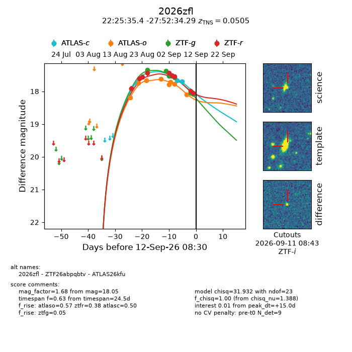
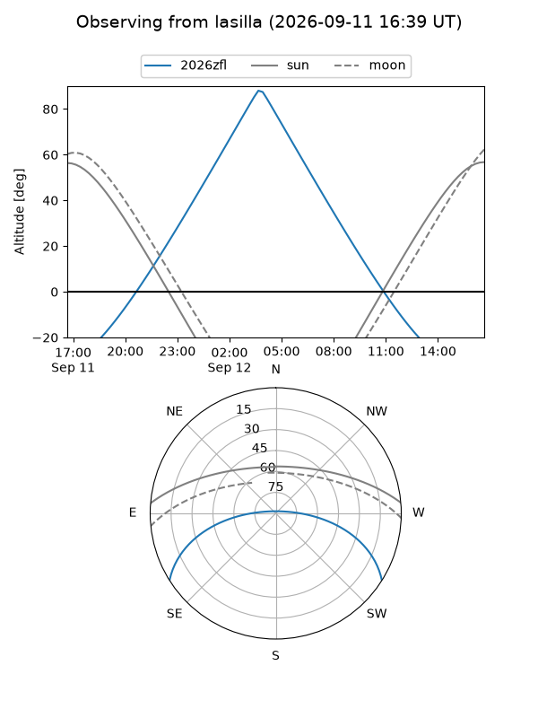
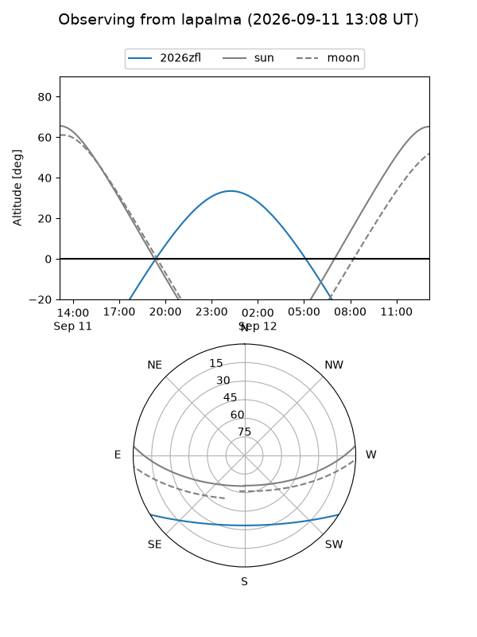
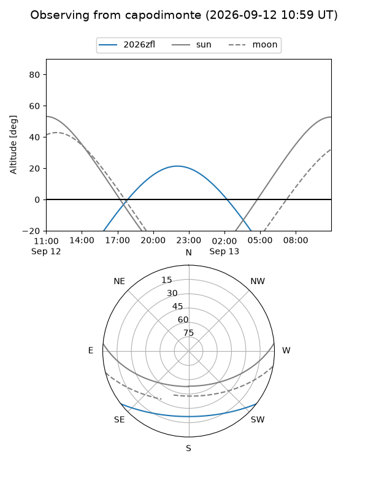
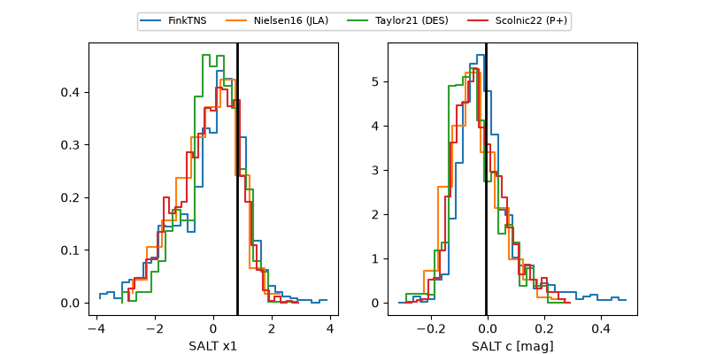

2026zfl
Target 2026zfl at 2026-09-12 08:32
Aliases and brokers:
FINK-ZTF: ztf.fink-portal.org/ZTF26abpqbtv
Lasair-ZTF: lasair-ztf.lsst.ac.uk/objects/ZTF26abpqbtv
ALeRCE-ZTF: alerce.online/object/ZTF26abpqbtv
YSE-PZ: ziggy.ucolick.org/yse/transient_detail/2026zfl
TNS name: wis-tns.org/object/2026zfl
Direct TNS query: direct search
alt names
ZTF26abpqbtv (ztf,fink_ztf)
2026zfl (tns,yse)
ATLAS26kfu (atlas)
Coordinates:
equatorial (ra, dec) = 336.3977,-27.87619
equatorial (HMS+DMS) = 22:25:35.44,-27:52:34.29
galactic (l, b) = (23.0034,-57.77043)
Flags:
TNS type: SN Ia
TNS redshift: 0.0505
peak dt: +15.0
Photometry:
last atlasc=17.70, atlaso=18.10, ztfg=18.09, ztfr=18.05
3 atlasc, 8 atlaso, 7 ztfg, 9 ztfr detections
Lightcurve

Visibility



Additional plots
